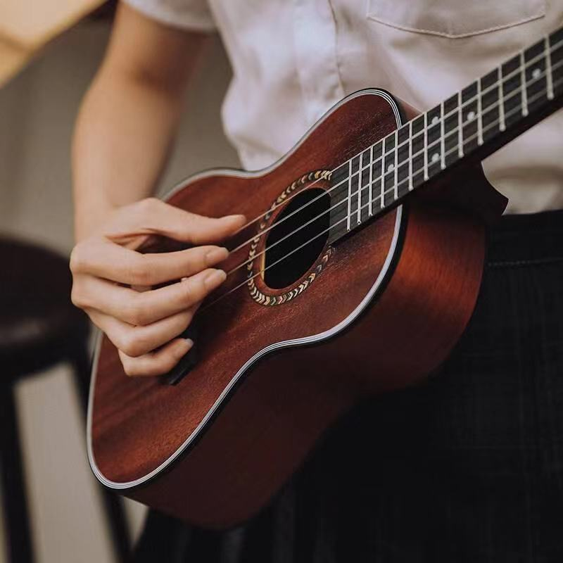
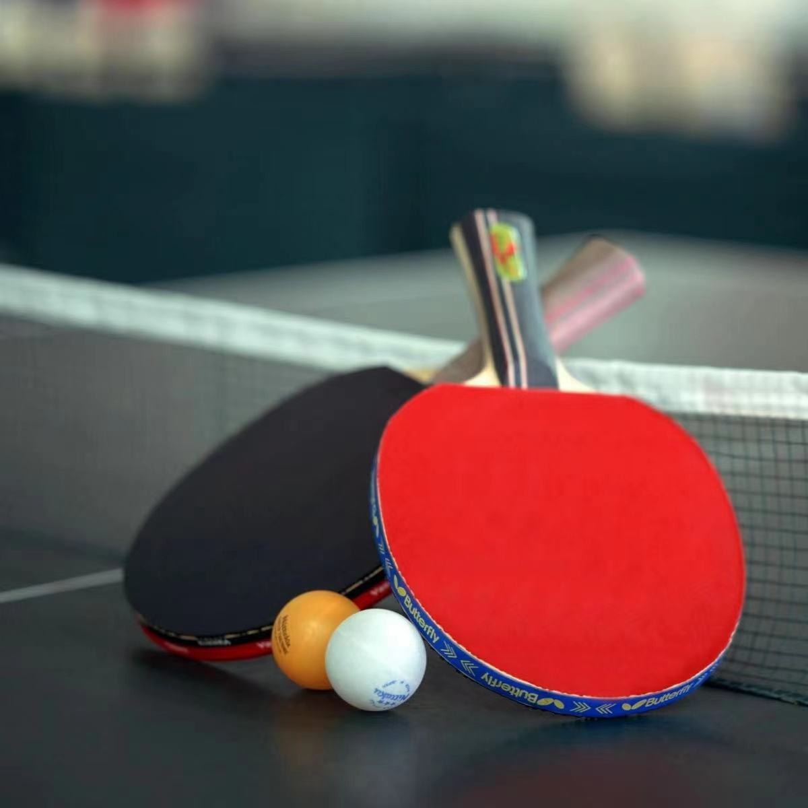

尤克里里
尤克里里是我热爱的兴趣爱好。它小巧精致，四弦之间流淌出动人的旋律。我享受弹奏尤克里里的过程，它让我在音乐中找到乐趣，也成为我表达情感的方式。无论是欢快的歌曲还是抒情的旋律，尤克里里都陪伴我度过美好时光。
爬山
爬山是我热爱的兴趣爱好。攀登高峰，感受自然的壮丽与辽阔，每次征服山顶都带给我无比的成就感。在攀爬过程中，我享受着挑战自我、超越极限的快感，也领略了大自然的鬼斧神工。爬山不仅锻炼身体，更锤炼意志，让我在攀登中找到自我，体验生活的无限可能。

乒乓球
乒乓球是我钟爱的兴趣爱好。每一次挥拍，都是技术与策略的对决，让我感受到竞技的乐趣。乒乓球不仅能锻炼我的反应能力和身体素质，还让我在比赛中学会了团队合作与竞争精神。每当我站在球台前，都能全身心投入，享受乒乓球带来的速度与激情。
足球
足球是我热爱的兴趣爱好。每一次踏上球场，我都能感受到那份独特的激情与活力。在绿茵场上奔跑，与队友们默契配合，射门得分，那种成就感无法言喻。足球不仅锻炼了我的体能，还培养了我的团队合作精神和竞争意识。每次踢球都是一次全新的挑战，让我乐在其中。